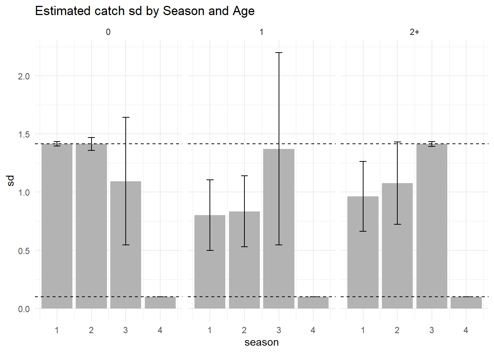
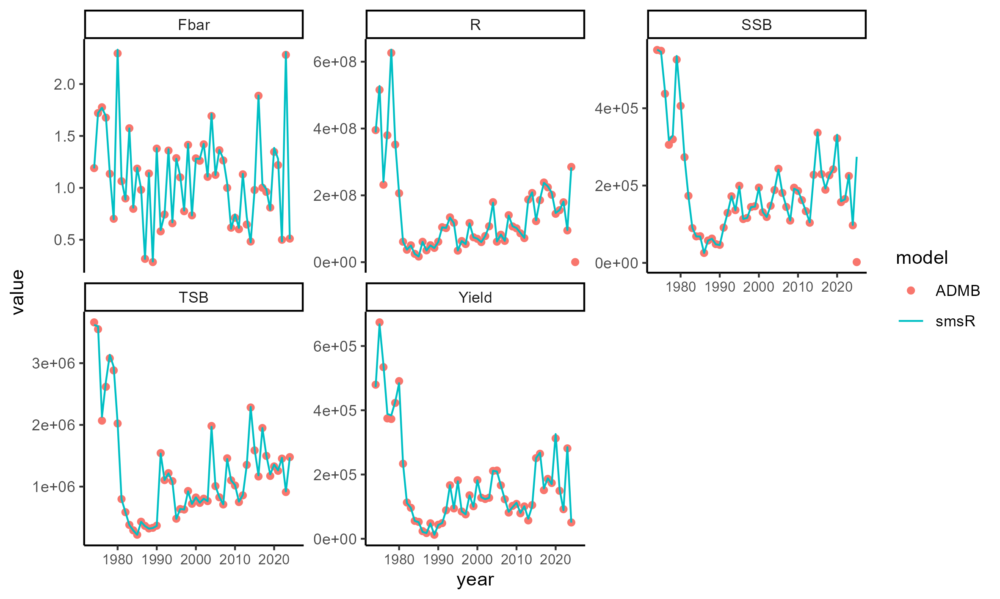

print(p1)

This repository serves to compare different potential model configurations for the North Sea sprat. All the models we will show are based on the seasonal \(smsR\) model. Until 2025 the model has run with ADMB, but here we use the smsR package available at
\(smsR\) is an R package which can be used to set up seasonal assessment through few R functions. Each of the functions offer simple to complex model setups, which can both respect historical assessment methods and more modern implementation of e.g., random effects. The package is currently used as assessments for the four North Sea Sandeel stocks, and a thorough comparison of the TMB and ADMB performance can be seen in the WKSANDEEL report. \(smsR\) provides close to identical parameter estimations as the legacy ADMB SMS code, however there might be some minute differences, in particular due to how parameters close to the boundary is treated in ADMB and TMB. Below is a figure showing the similarity of derived stock quantities from the assessment performed in 2025

We have chosen model setups that are close to the previous ones, but all the models we will provide here has a transparent data flow, and try to follow best statistical practices. Over the history of the stock many small modifications have been applied to the model setup and input data to a point where some of the changes are not traceable anymore. By resetting all these changes we provide options for a model with annual, half-year, and quarterly time steps.
Put the text here Ole ### Issues with the current assessment
The current sprat model originated in the 2018(?) sprat benchmark. In the last couple of years there has been some issues with the model leading to ad-hoc fixes in order to get an accepted assessment. Each of these issues are described in detail below.
In the past years the model has had convergence issues, particularly with the maximum gradient being above an acceptable level. The issue has been solved by taking the 0-group from the Q1 survey and scaling it differently than the other surveys. \(smsR\) does not internally scale the surveys, so this method does not change that issue. The core of the issue lies elsewhere; there is large confounding between the parameter estimating survey density dependence (the so-called power law) and the survey catchability parameter Q. The survey power law is implemented for two reasons that are linked
Avoid retrospective patterns in recruitment, as the in-year assessment can tend to overestimate the recruitment when the only data point is one observation in Q1
Reduce the risk that one observation point leads to a (too) high in year advice, since the 0 year olds in the spring become part of the SSB
The survey observation function in the model is described as
\[ N_{i,\mathrm{survey}} = q_i \, N_i^{p_i} \] Where \(N_{i,\mathrm{survey}}\) are the observed numbers at age in the survey, \(q_i\) is the age specific catchability, \(N_i\) are the numbers in the total population, and \(p_i\) is the density dependent survey power law. \(p_i\) and \(q_i\) are both estimated parameters.
Biologically, the parameter represents that the survey is likely to observe relatively more individuals in years with high abundance.
Another issue has been massive residual patterns, which has been solved by moving the catches into seasons where they did not originate. The catches from season 4 has since the benchmark been moved into season 3, except for the inital model year (as ADMB sms was then not able to converge). There is some confusion to where the catches in season 4 in the initial model year come from in the current data files, as the data has been added one year at a time.
Several of the models parameters are estimated on the boundaries, leading to slow model convergence in TMB. ADMB has a particular feature that ‘nudges’ parameters away from boundary conditions leading to the perception that a parameter has been correctly estimated, when in reality it is stuck in an infinitely small difference between the estimated parameter and the set boundary.
The parameters that are estimated poorly are related to the variance of catches in the seasons that has small total catch compared to season 1 (Figure 1).
print(p1)Since one of current issues with the model is the survey targeting the 0 year olds in Q1, as well as the power parameter associated with that survey, some changes can be made to make these parameters less troublesome. One particular setting that was used during the last benchmark is the sample based variance estimator for the stock-recruitment relationship. This means that the standard deviation of the hockey stick relationship was based on the observed differences from the modeled mean rather than being an observed parameter. Additionally, the likelihood contribution of recruitment was penalized by multiplying the likelihood by 0.1. This way of modeling stock recruitment leads to little relationship between the stock recruitment relationship and the modeled recruitment. However, it is also violating some core assumptions in integrated models, where the estimation model itself is regulating the relative strength between likelihood components.
We therefore propose two changes to settings that leads to marginal changes in the estimated quantities of spawning biomass:
The estimates of spawning stock biomass, recruitment, and fishing mortality for the models are shown below. We use the 4 season model, but with the catches assigned to the correct season. All models have some issues with the maximum gradient being above an acceptable level with 4 seasons included. This issue relates to the catch SDs estimated.
For this benchmark we have decided to start from scratch with the assessment, and not move any catches from one season to the other. To mitigate some of the issues with catch variance, we are here comparing an annual model, a two season model, and the traditional four season model, but without the catches moved between seasons. From the above analysis we went with the no power law, estimate recruitment variation and let the model itself scale the stock recruitment relationship. The choice primarily affects the last year of recruitment. We then reduce the number of seasons to 1, 2, and compare it with the current four seasons to avoid the high catch variance in season 4. For the reduced number of seasons we have adjusted the seasonality of the surveys to match each ot

All models provide similar output with respect to SSB, R and F (Figure 4, Figure 5, Figure 6), however it seems that a higher number of seasons lead to smaller retrospective patterns (Figure 7). This effect can also be seen in the retrospective patterns of recruitment (Figure 8), and even more in the retrospective patterns of F (Figure 9).